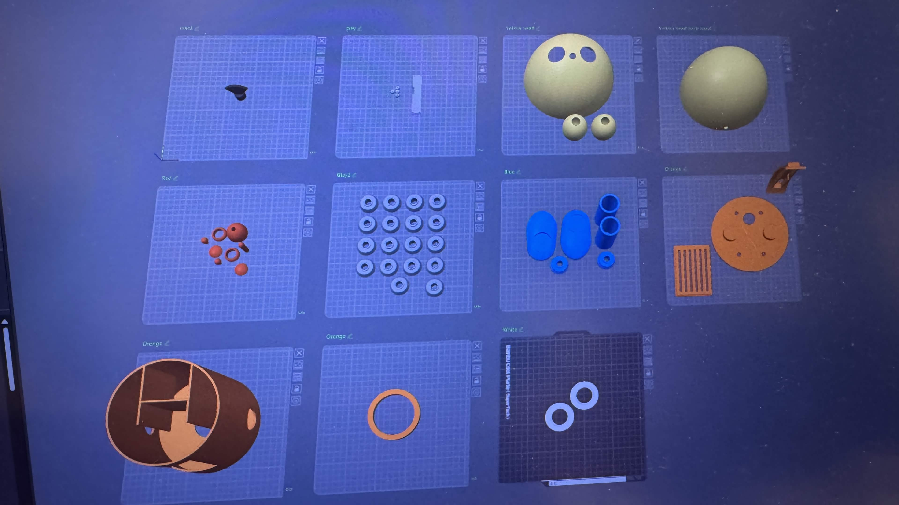
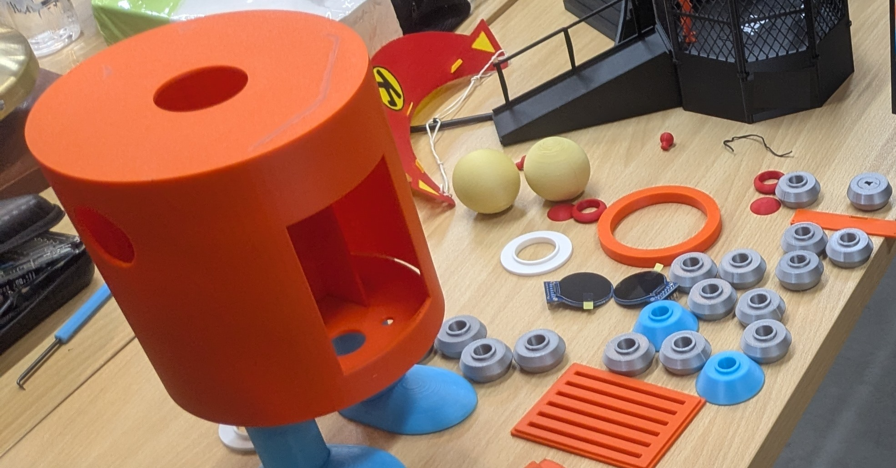

Robotics Dream Keeper Challenge · Tokyo
I am Korosuke!
An era when anyone can build a robot
uecken — my first robot · built at Robostadion (Akihabara)
0:00–0:30
Background
"Why not build Korosuke?"
- I'm a wireless engineer — not a robotics person
- Only ideas, no robot… then Murata-san (Robostadion, Akihabara) invited me
- Got the 3D-printed parts at his studio → started building
- Inspired by Disney's Olaf robot & Open Duck Mini
0:30–1:10
What is Korosuke?
Sees · Listens · Thinks · Talks · Emotes
- Brain = one D-Robotics RDK X5 board
- Vision + STT + local LLM + TTS — 100% on-device
- No cloud. No API keys.
- Speaks Japanese & English
1:10–1:45
Hardware
No custom PCB — just simple wiring
Power bank → RDK X5 · camera = mic (C270) · one ESP32-S3 → eyes + arms · I2S amp → φ50 speaker · two power rails, common GND
1:45–2:20
Software
One "brain" orchestrates everything
- 🎤 Speech → text (SenseVoice)
- 🧠 Local LLM thinks (TinySwallow-1.5B, 5–10 s → "thinking eyes")
- 🗣 Voice out (Open JTalk)
- 👀 BPU finds people @ ~20 FPS → eyes follow you
- 💪 ESP32-S3 → 8 eye emotions + rope-pull arms
2:20–2:55
Build
25 hours, together with AI
- 15 h 3D printing + 10 h electronics & software
- Tools: 3D printer · velcro · string · zip ties
- Body, wiring, software — designed with AI
- I was the eyes and hands of the AI — placing parts, debugging


2:55–3:30
Message
Anyone can build a robot.
One beginner + AI + a 3D printer + good friends at a robot space
= a talking robot in 25 hours. Someday, one day.
Everything is open source →
github.com/gurimaruking/corosuke-robot
Now — let's meet him. Korosuke, say hello!
3:30–4:00
Live demo
1 minute with Korosuke
- 「コロすけ！」 → eyes find & follow
- 「こんにちは！元気？」 → thinking eyes (local LLM, 5–10 s) → "〜ナリ!" reply
- Raise a hand → he waves back
- Power button → "good night" → ✕✕ eyes = safe to unplug
Fallback videos: korosuke_demo_10s.mp4 · arm_rope_pull.mp4
ワガハイはコロ助ナリ！ Thank you! 🤖
4:00–5:00
0:00